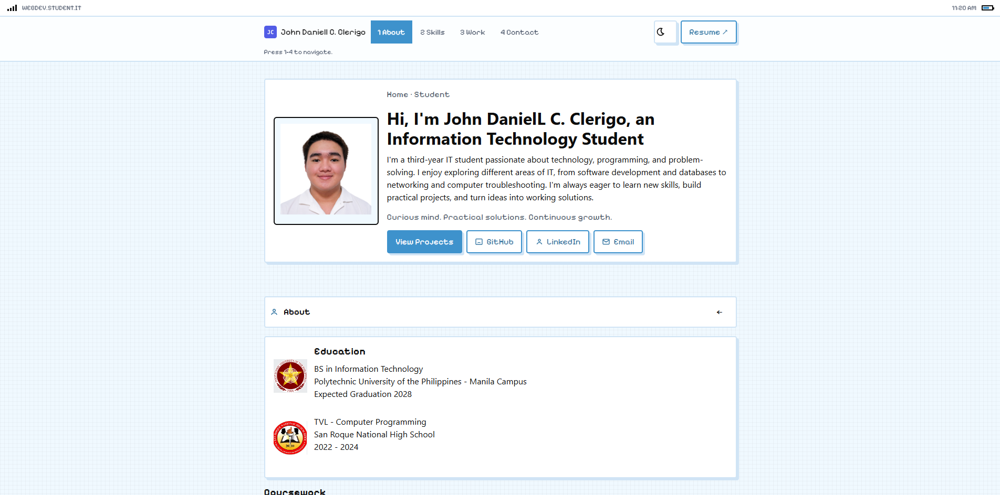

Hi, I'm John Daniell C. Clerigo,an Information Technology Student
I'm a third-year IT student passionate about technology, programming, and problem-solving. I enjoy exploring different areas of IT, from software development and databases to networking and computer troubleshooting. I'm always eager to learn new skills, build practical projects, and turn ideas into working solutions.
Bachelor of Science in Information Technology
Polytechnic University of the Philippines - Manila Campus
Expected Graduation 2028
Technical Vocational and Livelihood - Computer Programming
San Roque National High School
2022 - 2024
Coursework
Database Management Systems
Web Development
Object-Oriented Programming
Computer Networks
Data Structures
My coursework has helped me understand the fundamentals of building software, managing data, and working with computer systems. I enjoy learning how different technologies work together and applying these concepts to academic projects. As I continue my studies, I hope to strengthen my technical foundation and become more confident in tackling complex challenges.
A responsive multi-page portfolio built to showcase academic projects, web development work, and UI designs. Combines modern accessibility standards with a unique retro, mobile-inspired design aesthetic and shortcut key navigation.
Conceptualized and designed a mobile and web-based library management solution for the PUP Ninoy Aquino Library and Learning Resources Center (NALLRC) to solve long queueing times and tedious manual logging. Introduced QR code-based automated sign-ins, pre-registration features, and a real-time library capacity tracker to streamline student access and eliminate entry friction.
Designed a User-Centered Design (UCD) solution to eliminate library entrance bottlenecks at the PUP NALLRC. Conceptualized an offline-ready QR/NFC digital student pass, pre-filled web forms, and a live occupancy tracker—reducing average student entry time from 5 minutes down to under 30 seconds.
A sleek, responsive e-commerce web storefront for browsing and purchasing mobile devices. Features dynamic product filtering, real-time input validation, and seamless client-side cart management.
Assignments for COMP 016 - Web Development, in order, so you can see how my work has progressed.
1 of 3 assignments completed
01Basic HTML Resume & Document StructureCompleted
What I built: A structured online resume page using core HTML elements—headings, paragraphs, unordered lists, `mailto:` links, horizontal rules, and image alignment—to organize my contact info, education, skills, and personal details.
What I improved or learned: How to organize raw text into a clean, readable document hierarchy using foundational HTML tags and attributes without relying on CSS.
02Windows8 Tile Table with Images & LinksCompleted
What I built: A Windows8-inspired tile interface using HTML tables, colspan attributes, custom hex background colors, and clickable app logos linking to platforms like Spotify, Apple Music, Netflix, Gemini, ChatGPT, Steam, and Valorant.
What I improved or learned: Merging table cells with colspan, styling borders with border-collapse, and wrapping images in anchor tags to create an interactive grid layout.
What I built: A single-page pizza shop website ("Pizza Trio") structured with semantic landmarks (header, nav, main, section, footer), an external CSS stylesheet, and an interactive order form featuring text inputs, a delivery address textarea, a flavor dropdown (select), quantity constraints, size radio buttons, and extra topping checkboxes.
What I improved or learned: Linking external stylesheets (style.css) to style section containers and navigation bars, and pairing label elements with diverse HTML form controls for structured user input.
First assignment — plain, unstyled HTML resume with default browser typography.

Latest work — styled, responsive portfolio with custom UI cards, theme toggling, and shortcut navigation.
Reflection: Moving from raw HTML lists to semantic layouts, custom CSS styling, and interactive JavaScript helped me turn static text into a polished user experience.
If you are a professor, classmate, or recruiter looking for a reliable intern, I would be glad to talk about coursework, projects, or an upcoming role.